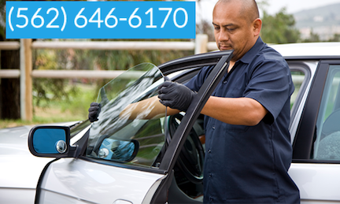

We provide mobile car glass replacement in Norwalk and cities nearby. Call us today for an estimate and schedule your appointment with mobile service. We came to your place to do the installation at your home or office. Our technician area trained to provide a quality replacement service.

If you're a car owner, you know how important it is to have a reliable auto glass and windshield replacement service provider. You never know when an accident or rock chip could occur, and it's essential to have a company you can trust to fix it quickly and efficiently. That's where we come in. We are a leading auto glass replacement service provider in Norwalk, California, with over 12 years of experience in the industry. Our skilled technicians are ready to help you with any auto glass repair or replacement needs you may have. We offer free mobile services in the Norwalk California area, so you don't have to worry about driving your vehicle to a shop. Our fully equipped mobile units come directly to you, whether you're at home, work, or on the side of the road. We understand the inconvenience of having a broken windshield or shattered car window, which is why we provide a quick turnaround time and vacuum any shattered glass in your vehicle. Our commitment to safety is a top priority, and we specialize in safety laminated windshields and tempered glass windows. Our premium quality glass meets or exceeds the manufacturer's standards, and we only use OEM equivalents to ensure a perfect fit. We take safety standards seriously and only use products that adhere to Federal Motor Vehicle Safety Standards (FMVSS) and Original Equipment Manufacturer (OEM) standards. Our windshield products include features like rain sensing windshields and Lane Departure Warning System windshields, providing additional safety and convenience to our customers. We understand that your time is valuable, which is why we provide mobile windshield replacement in Norwalk California, ensuring you can get back on the road quickly and hassle-free. We pride ourselves on having a highly skilled team of technicians who are knowledgeable and equipped to handle any auto glass repair or replacement you may need. So, if you need auto glass in Norwalk California, look no further. Our commitment to quality, safety, and service sets us apart from other providers. Call us today to schedule your appointment and see why we are the top-rated mobile auto glass replacement service in the area.
Give us a call — we're happy to answer any questions.
Call Now · (562) 646-6170